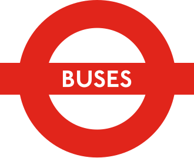
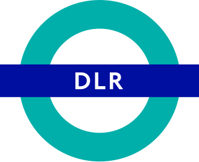
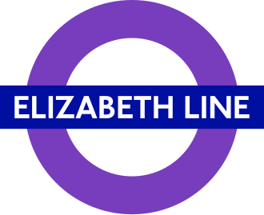
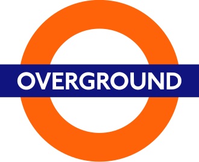
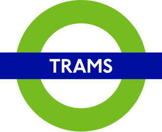

An interactive resilience study of London's surface and rail transport. We measure how much walking access every neighbourhood loses when a single route is cancelled — and surface the places that carry the heaviest burden.





Transport for London publishes the Public Transport Accessibility Level (PTAL) — a single score that tells you how reachable a neighbourhood is on a normal day, when every line is running and every stop is open.
But disruption is the rule, not the exception. A signal failure, a closure or a cancellation can pull whole streets out of the network in minutes. PTAL has nothing to say about that.
This project adds the missing layer: after a route is cut, how much access is left, and where? The result is a resilience score for every 100 m square in Greater London.
Each formula below is written in plain mathematics — no programming, just a recipe. Read the formula on the left, the human translation on the right.
The interactive map opens in a new tab. Here is the workflow we suggest — each step takes a single click.
The map starts clean. Click Analysis at the bottom of the screen to slide in the controls — search routes, browse boroughs, pick scenarios.
Every 100 m cell is shaded by its baseline AI. Sage means well-served, terracotta means a transport gap. Click any cell to see which routes feed it.
Pick any route from the right panel and tick Cancel. The disruption layer appears: red where access is lost, untouched where alternatives exist.
Drag the divider to split the view. Baseline on the left, disrupted on the right. The Selected Grid card on the panel shows exact AI before / after / LTRS.
After excluding school and special services, these are the five regular London routes whose cancellation strips the most neighbourhoods below the 12-minute walking-access threshold. Notice how every winner is an outer-London route — places where alternatives are scarce.
Each row is a route (most disruptive at the top). Each column is one of the four impact metrics, normalised across the 498 regular routes. Darker terracotta = larger relative impact.
Cancel any route or combination. Click a grid. Compare boroughs. Every metric on this page is computed live in your browser against the same OSM walking network used in this study.